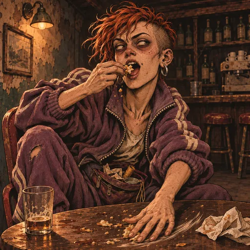
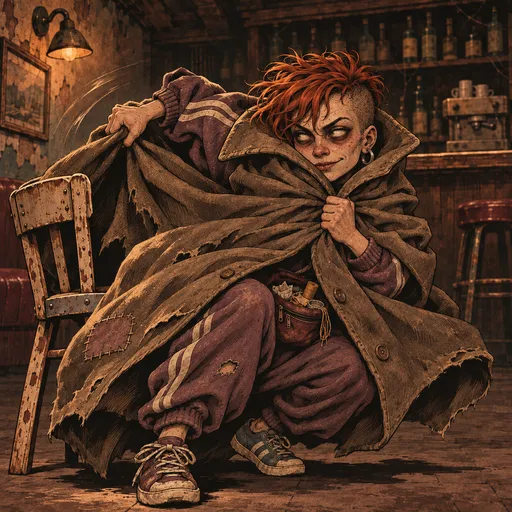
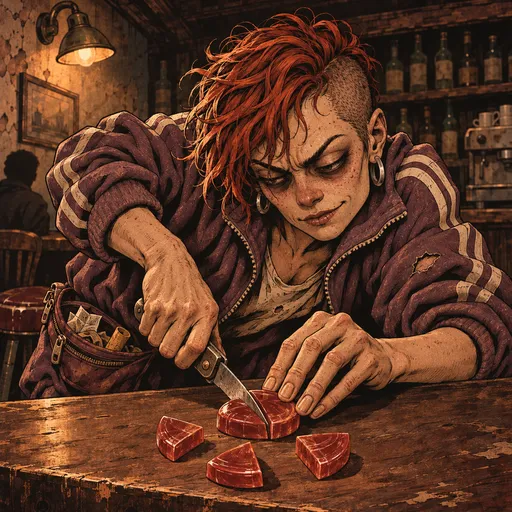
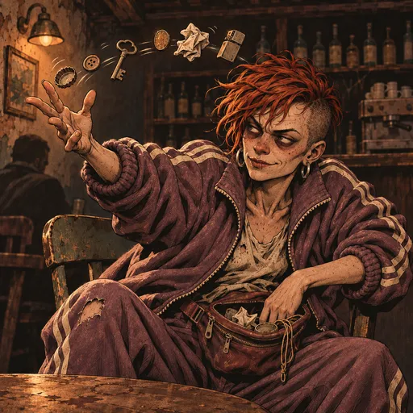
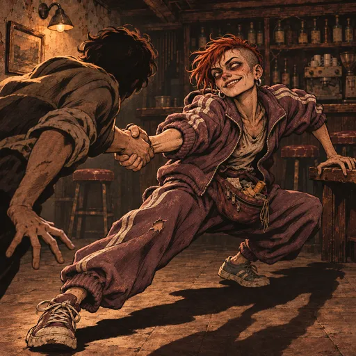

Desiderio Incontrollabile
com.basic.ToxicGrab

A 60 px
Mano alla bocca e volto leggibili; il piccolo avanzo di cibo non si distingue.
Anomalie visive: La tuta appare prugna brunito, con il violetto poco netto sotto la luce calda.
Undici generazioni del 26 novembre 2026, in attesa del giudizio del proprietario. Registro · Prompt letterali. I campi del giudizio sono compilabili per la revisione e non salvano automaticamente il testo.
com.basic.ToxicGrab

A 60 px
Mano alla bocca e volto leggibili; il piccolo avanzo di cibo non si distingue.
Anomalie visive: La tuta appare prugna brunito, con il violetto poco netto sotto la luce calda.
junkie.character.PatheticBlade

A 60 px
Posacenere rovesciato e mano alzata visibili; la scheggia è troppo piccola per identificarla.
Anomalie visive: La tuta appare prugna brunito; la scheggia viene mostrata sopra il mucchio.
base.tossico.bound.RaschiareIlFondo

A 60 px
Cappotto e postura raccolta leggibili; le pieghe si fondono nelle ombre.
Anomalie visive: La tuta appare prugna brunito; la posa raccolta riprende in parte quella del riferimento.
junkie.character.RottenSmile

A 60 px
Gesto di taglio e caramella rossa visibili; lama e singole porzioni poco distinte.
Anomalie visive: La tuta appare prugna brunito; tre spicchi separati e una porzione maggiore non formano quattro spicchi uguali.
junkie.LethalHeroinDose

A 60 px
Nube e avversario arretrato leggibili; il filtro della sigaretta non si distingue.
Anomalie visive: Tre braccia visibili di Celestina: mano con sigaretta, appoggio sul gomito e ulteriore mano a terra. Tuta prugna brunito.
junkie.MethDrivenRage

A 60 px
Mano lanciata e arco di oggetti visibili; i singoli oggetti non sono identificabili.
Anomalie visive: Il gesto è molto posato; tuta prugna brunito.
junkie.Cough

A 60 px
Getto dalla bocca e avversario che si ritrae leggibili; mani minute e poco distinte.
Anomalie visive: Mano aggiuntiva alla gola, oltre alla mano sul tavolo e a quella sul ventre. Tuta prugna brunito.
junkie.PervertedMetabolism

A 60 px
Braccia alzate e sagoma leggibili; le bottiglie ai piedi si confondono.
Anomalie visive: Alcune bottiglie hanno etichette; pugni entro il margine esterno del 5%. Tuta prugna brunito.
junkie.AmphetamineReflexes

A 60 px
Pugno alto e abbassamento di Celestina leggibili; dettagli del volto poco distinti.
Anomalie visive: La schivata è un abbassamento accovacciato; tuta prugna brunito.
junkie.ToxicBloodDrain

A 60 px
Trazione tra le figure leggibile; stretta di mano minuta e ombra poco distinta.
Anomalie visive: L’ombra resta sul pavimento e non sale sull’avversario. Tuta prugna brunito.
base.tossico.UnAssaggino

A 60 px
Bicchiere alla bocca e mano del cliente protesa leggibili; annusare non è distinguibile.
Anomalie visive: Celestina è già seduta e beve; l’atto di annusare non è esplicito. Tuta prugna brunito.